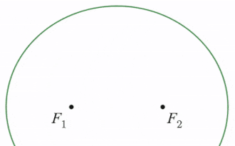

Reflective properties of conics, and the Law of Cosines

Here are a couple of new approaches to proving the reflective properties of conics, and the Law of Cosines. The aim is to make the explanations more visual and intuitive than those that are currently presented in textbooks.